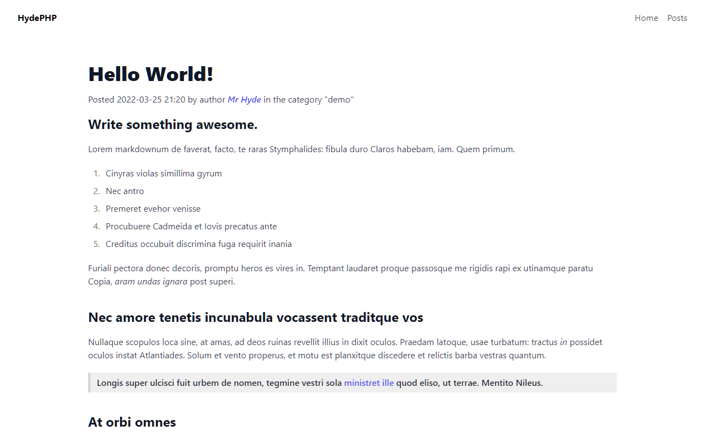
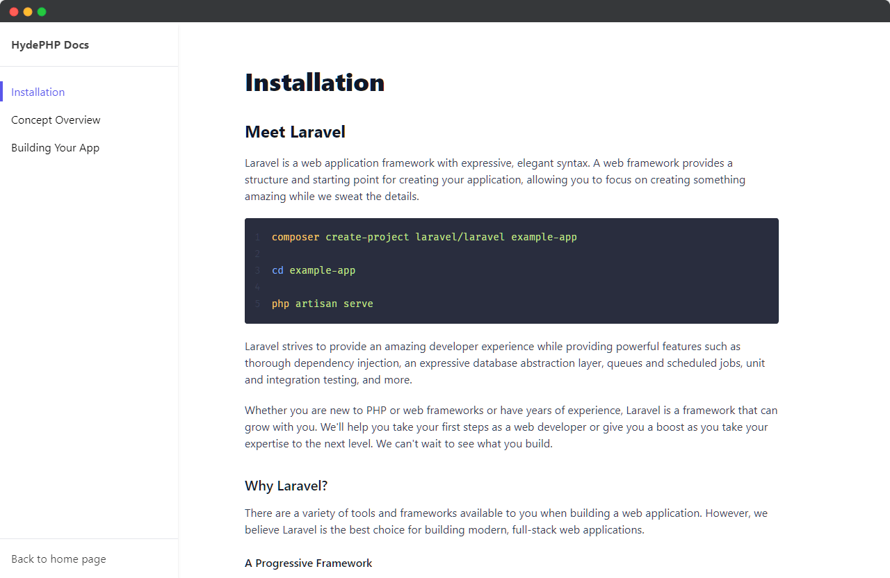

1--- 2title: Hello World! 3description: Short post excerpt for previews and meta tags 4category: demo 5author: mr_hyde 6date: 2022-03-29 09:16 7--- 8 9## Write something awesome.10 11Lorem markdownum Austri occupat redire sum sponte arcus,12[ferae](http://www.aetheraet.net/lacrimissortita.aspx) longo,13timuit magnanimus aera, violentam. Tractu ter.14 151. Pelopeia et terras iussa cavernas162. Petit ignoscite ac nuda miserum Tereus173. Tuli facinus Panaque virgo sentire copiaHydePHP
Next-Level Static App Generator
Create, websites, blogs, documentation sites, and more, with the power of Laravel and the simplicity of Markdown.
composer create-project hyde/hyde --stability=devcomposer create-project hyde/hyde --stability=devCreate beautiful websites in minutes!
It's never been easier to build beautiful websites to show off your content to the world.
Hyde comes with Tailwind-based Blade views so that you can focus on content, not markup.
Boost Productivity
Hyde is incredibly fast to get started with. Here's why.
- ✓ Pre-built semantic Blade templates using TailwindCSS.
- ✓ Easy asset managing with pre-configured Laravel Mix.
- ✓ Content-first workflow using your choice of tools.
Automatic Content
Hyde takes care of the boring stuff, so you don't have to.
- ✓ Automatic navigation and sidebars menus.
- ✓ Intelligent metadata for SEO and accessibility.
- ✓ Automatic file discovery without needing routing.
Who is Hyde for?
Wondering who can benefit from using Hyde? Well, besides everyone, here's some use cases to get your mind started.
- Laravel developers wanting to build a static site without having to learn a new framework.
- Content creators who just want to write blog posts in Markdown and not have to worry about anything else.
- Developers who want to get a documentation site up and running quickly, allowing them to focus on content.
How does it work?
Quick and painless installation
Hyde is installed similarly to Laravel
Installation is easy by using composer. The installer creates a directory with all the files you need to get started, including Blade views and compiled Tailwind assets.
Save content in _source folders
Creating content is easy with Markdown
Put your Markdown or Blade content in the source directories. The directory you use will determine the Blade layout and output path that will be used.
Files are automatically discovered
Compiling is initiated with the HydeCLI
When running the build command, Hyde will take your source files and intelligently compiles them into the output directory. During this build navigation menus and sidebars will be generated automatically.
More about Hyde
HydePHP is a new Static Site Builder focused on writing content, not markup. With Hyde, it is easy to create static websites, blogs, and documentation pages using Markdown and (optionally) Blade.
Hyde is powered by Laravel Zero which is a stripped-down version of the robust Laravel Framework. Using Blade templates the site is intelligently compiled into static HTML.
Hyde is inspired by JekyllRB and is created for Developers who are comfortable writing posts in Markdown. It requires virtually no configuration out of the box as it favours convention over configuration. This is what makes Hyde different from other Laravel static site builders that are more focused on writing your blade views from scratch, which you can do with Hyde too if you want.
Hyde is designed to be stupidly simple to get started with, while also remaining easily hackable and extendable. Hyde comes with a lightweight minimalist frontend layout built with TailwindCSS which you can extend and customize with the Blade components.
Due to this powerful modularity yet elegant simplicity, Hyde is a great choice for developers no matter what their background or experience level.
Turn Markdown into Blog Posts
Write content. Not code.*
*Unless you want to, of course.
_posts/hello-world.md
_site/posts/hello-world.html

Beautiful Documentation Pages
All without breaking a sweat.
Fully Mobile Friendly, of course.
Enjoy your site in any size of screen.


Clean Semantic HTML
Data Rich, SEO Friendly, and Accessible.The Hyde Blogging Module is compiles your Markdown into Semantic HTML enriched with Microdata. Automatic ARIA-roles ensure that your content is accessible to screenreaders.
Latest Posts
Here are the latest posts from the Hyde Blog! Fully made with Hyde, of course!
Automate HydePHP sites using GitHub Actions and GitHub Pages
HydePHP is a framework for building static websites. While the most common way to interact with HydePHP is through the command line, you can actually manage an entire site using GitHub.
Internal Architecture of HydePHP - Part 3: Page Models
In this third instalment we take a look at how Hyde internally parses Markdown files and compiles them into HTML.
Internal Architecture of HydePHP - Part 2: Services
Part two in the series on the internal architecture of HydePHP, this time we take a "Deep Dive" into Services.
Internal Architecture of HydePHP - Part 1: Introduction
This first part in a series of the architecture of HydePHP will give an overview of design patterns and concepts in the Hyde Framework Core.
Hyde Feature Highlights
Learn about some of the features Hyde has to offer.
What is Hyde?
Learn about Hyde and find answers to common questions!
Introducing images!
The v0.10.0 release introduces featured images for blog posts.
Creating a new Hyde site from scratch
This blog post will guide you through creating a new Hyde site, while also showcasing some neat features!
Why static sites?
A quick run-down of the benefits of static websites
Creating a static HTML post using HydePHP
In this tutorial, we go through the simple process of generating a static blog post